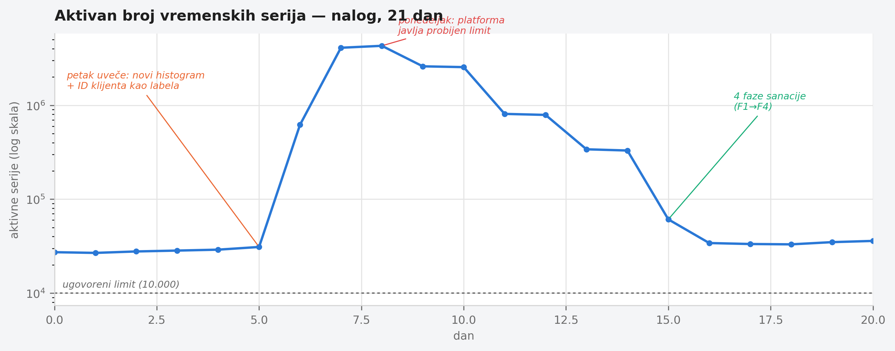

Poglavlje 11 — Kardinalnost i cena: kako sistem prirodno naraste iznad budžeta
Račun za vodu retko iznenadi domaćinstvo naglo. On raste polako, mesec za mesecom — dodatni tuš, novi bojler, dete koje je poraslo i duže se kupa — dok jednog dana ne stigne broj koji nikoga ne bi trebalo da iznenadi, a ipak iznenadi baš svakoga, jer ga niko nije pratio dovoljno pažljivo dok je rastao. Retko je jedan slavina koja curi kriva za skok od deset puta. Mnogo češće je u pitanju deset malih, sasvim opravdanih odluka, od kojih je svaka pojedinačno bila razumna u trenutku kad je doneta.
Trošak telemetrije raste na potpuno isti način — ne kroz jedan dramatičan događaj, nego kroz gomilanje malih, pojedinačno opravdanih odluka o tome šta sve zaslužuje sopstvenu vremensku seriju.
11.1 Pitanje na koje ovo poglavlje odgovara
Poglavlje 3 je već pomenulo, u prolazu, da je sistem koji knjiga prati jednom probio besplatni tier za jedan vikend. Ovo poglavlje odgovara na pitanje koje tamo nije bilo mesta da se razradi: kako tačno telemetrijski sistem, bez ijedne zlonamerne promene, naraste do te tačke — i šta konkretno znači "vratiti ga nazad" kad se to dogodi?
11.2 Kako je to urađeno — praktičan pregled
Šta se zapravo desilo tog vikenda
Petkom uveče je u kod jednog servisa dodat novi histogram — merenje trajanja obrade po zahtevu, sa namerom da se prati performansa po klijentu. Atribut dodat na taj histogram kao labela bio je ID klijenta. U trenutku kad je kod pisan, to je delovalo kao potpuno razumna odluka: ID klijenta je koristan za filtriranje, tim je često želeo da vidi "kako se ponaša baš ovaj klijent", i sistem je u tom trenutku imao nekoliko desetina aktivnih klijenata — mala, bezopasna cifra.
Ono što nije bilo eksplicitno razmotreno u trenutku pisanja koda: histogram sa klasičnim (bucket) predstavljanjem ne stvara jednu vremensku seriju po kombinaciji labela — stvara jednu seriju po bucket-u, tipično desetak ili više, pomnoženo sa svakom jedinstvenom vrednošću svake labele. Broj klijenata je do ponedeljka ujutru narastao na nekoliko hiljada (uobičajen vikend rast za taj tip sistema, ništa neuobičajeno) — ali cena rasta klijenata nije bila linearna, bila je multiplikativna kroz broj bucket-a po histogramu. Sistem koji je petkom generisao par desetina hiljada aktivnih serija je ponedeljkom generisao nekoliko miliona.
Tim je ovo otkrio ne iz alarma dizajniranog da uhvati baš ovaj problem — takav alarm tada nije postojao — nego iz platforme same, koja je automatski obavestila da je nalog probio ugovoreni limit aktivnih serija.
Četvorofazni plan sanacije
Ono što je usledilo nije bila jedna popravka, nego plan sa četiri nezavisne mere, svaka ciljajući drugi sloj problema:
Faza 1 — nativni histogrami kao strukturna mera. Klasičan histogram plaća kardinalnost po bucket-u; nativni histogram (podržan od strane Prometheus/Mimir ekosistema) čuva raspodelu unutar jedne vremenske serije po kombinaciji labela, sa dinamičkim bucket-ima koji se prilagođavaju bez unapred definisanog skupa granica. Za histograme kod kojih je puna raspodela zaista potrebna (ne samo par percentila), ovo je najveći pojedinačni lever u planu — ne smanjuje broj klijenata koji se prate, nego uklanja multiplikator koji je klasičan bucket format nametao.
Faza 2 — agregacija visoko-kardinalnih atributa na nivou gateway-a. Za
atribute gde puna preciznost po pojedinačnoj vrednosti nije neophodna za
dashboard koji se zapravo koristi (ID klijenta je klasičan primer — retko ko
gleda dashboard filtriran po jednom konkretnom klijentu od hiljada), gateway iz
Poglavlja 4 dobija transform korak koji grupiše nisko-frekventne vrednosti u
zajedničku kategoriju pre nego što stignu do skladišta. Ovo je ista tehnika kao
reduce_http_card proces već pomenut u vezi sa service.instance.id — primenjen
ovde na širi skup atributa.
Faza 3 — podešavanje Tempo metrics-generator dimenzija. Metrike generisane iz trejsova (span metrics) automatski dodaju intrinzične dimenzije (tip spana, status kod, ime servisa, ime spana) — sve sa ograničenim, malim brojem vrednosti. Problem nastaje kad se custom atribut doda kao dodatna dimenzija bez razmišljanja o tome koliko jedinstvenih vrednosti taj atribut nosi: dodavanje jednog atributa sa hiljadama jedinstvenih vrednosti može da pomnoži broj aktivnih serija i za dva reda veličine. Sanacija je bila proći kroz svaku dodatu custom dimenziju i zadržati samo one koje neki postojeći dashboard zaista koristi za filtriranje — ne "možda će biti korisno", nego "trenutno se koristi".
Faza 4 — keep-list pravila za sidecar kolektore. Za flotu ECS/Fargate zadataka iz Poglavlja 6, svaki sidecar kolektor dobija eksplicitnu listu metrika koje sme da prosledi dalje, umesto podrazumevanog "sve što exporter proizvede". Ovo je najgrublja od četiri mere — ne cilja jedan problematičan atribut nego čitave porodice metrika koje niko ne gleda — ali je i najpouzdanija, jer ne zavisi od toga da neko unapred predvidi koji će atribut sledeći eksplodirati.
Ovako je taj rast izgledao izmeren, sa svim fazama sanacije koje slede (logaritamska osa je neophodna — bez nje bi vikend skok od 34.000 na 4,3 miliona serija spljoštio sve ostalo na grafiku u ravnu liniju):

Kako se meri da li je promena zaista nešto uklonila
Nijedna od četiri mere nije primenjena "na slepo" — pre i posle svake, tim meri stvaran broj aktivnih serija, ne pretpostavlja ga. Osnovni obrazac:
daje ukupan broj aktivnih serija u tom trenutku — poređenje pre i posle promene je prva, najgrublja provera. Za lociranje koje metrike najviše doprinose ukupnom broju:
A kad je već jasno koja metrika je problem, sledeće pitanje je koja labela na toj metrici nosi najviše jedinstvenih vrednosti — atribut sa hiljadu vrednosti je sto puta skuplji od atributa sa deset:
Ovaj poslednji upit je bio taj koji je konačno pokazao ID klijenta kao dominantnog krivca za histogram iz vikend incidenta — ne pretpostavka, mereno.
Zašto rollback mora biti trivijalan
Nijedna od četiri mere nije puštena u produkciju bez unapred pripremljenog puta nazad — jedna promena env promenljive, ne redeploy, ne rollback prethodne verzije image-a. Razlog je konkretan: agresivna agregacija ili keep-list pravilo koje je previše grubo može da ukloni podatak koji je nekome zaista trebao za dijagnozu tačno u trenutku incidenta — i cena sporog povratka u tom trenutku je veća od cene sporije primene same mere. Prvi keep-list eksperiment, primenjen na jedan manje kritičan segment flote pre šire primene, otkrio je baš takav slučaj — jedna metrika koja je izgledala neiskorišćeno je zapravo bila jedini signal za redak, ali stvaran problem, i vraćena je na listu istog dana.
11.3 Analitički deo — zašto kardinalnost nije "detalj skladištenja"
Zvanična preporuka: nativni histogrami kao strukturno rešenje
Prometheus zajednica (uključujući i sopstvenu dokumentaciju o praksama
histograma) sve više tretira nativne histograme kao podrazumevan izbor za
nove instrumente, ne kao naprednu opciju za posebne slučajeve — upravo zato
što klasičan bucket format ima cardinality trošak ugrađen u svoju definiciju,
ne kao propust u implementaciji nego kao posledicu formata samog. Nezavisni
materijal (uključujući analize sa Last9 i Logz.io) dosledno navodi relabeling
(labeldrop/labelkeep), scrape-level granice (sample_limit,
label_limit) i agregaciju kroz recording rules kao standardni prvi sloj
odbrane — sve mere koje implementacija koju knjiga prati takođe koristi, samo
raspoređene po slojevima specifičnim za ovaj sistem (gateway umesto
recording rules, keep-list po sidecar-u umesto globalnog scrape config-a).
Gde implementacija dodaje nešto specifično: slojevita, ne jedinstvena mera
Zvanični materijal retko predlaže kombinaciju sve četiri mere primenjene zajedno — obično se svaki dokument fokusira na jedan sloj (histogrami, ili relabeling, ili scrape-level granice). Odluka da se sve četiri primene paralelno, svaka na svom sloju arhitekture, nije bila proizvoljna: incident je pokazao da nijedan pojedinačan sloj sam za sebe nije dovoljan — nativni histogram rešava problem bucket multiplikacije, ali ne rešava custom dimenzije dodate na span metrics; keep-list na sidecar-u rešava porodice metrika koje niko ne gleda, ali ne rešava jedan histogram koji sam po sebi eksplodira. Redundantnost slojeva ovde nije rasipanje truda — svaki sloj hvata drugu klasu greške.
Cena da se ništa od ovoga nije uradilo: kontrafaktički scenario
Vredi konkretno odigrati alternativu: da tim nije izmerio koja labela tačno nosi kardinalnost, nego je reagovao na broj sa platforme brzim, neciljanim potezom — na primer, gašenjem celog histograma dok se "ne smisli nešto bolje". Trošak bi zaista pao, odmah i drastično. Ali podatak koji je taj histogram nosio (performansa po klijentu) bi nestao u potpunosti, uključujući i za onih par desetina klijenata gde je taj podatak zaista bio koristan i korišćen. Neciljana mera menja jedan problem (previsoka cena) za drugi (izgubljena vidljivost) umesto da reši prvi bez stvaranja drugog — isti obrazac viđen već u Poglavlju 10 kod redakcije SQL teksta, sada na drugom nivou sistema.
Vratimo se na račun za vodu s početka poglavlja. Domaćinstvo koje dobije zastrašujući račun ima dva puta: zatvoriti sve slavine iz panike, ili proći kroz kuću i izmeriti koja tačno slavina, koji tačno uređaj, nosi najviše potrošnje — pa popraviti baš taj. Kardinalnost nije trošak koji se rešava osećajem da je "previše metrika" — rešava se merenjem koja tačno metrika, koja tačno labela, nosi taj trošak, i popravkom baš tog mesta, ne svih mesta odjednom.
11.4 Skupljena pravila iz ovog poglavlja
- Pre dodavanja bilo kog atributa kao labele na histogram ili brojač, postavi pitanje koliko jedinstvenih vrednosti taj atribut može da nosi — ne koliko ih nosi danas, nego koliko realno može da naraste.
- Koristi nativne histograme umesto klasičnih bucket-a kad god je puna raspodela zaista potrebna — to uklanja multiplikator, ne samo simptom.
- Meri kardinalnost pre i posle svake promene (
count,topk,count by (labela)) — nikad ne pretpostavljaj da je promena nešto uklonila bez brojke koja to potvrđuje. - Zadrži samo custom dimenzije na metrikama generisanim iz trejsova koje neki postojeći dashboard zaista koristi za filtriranje, ne one koje bi "možda mogle biti korisne".
- Svaka agresivna mera protiv kardinalnosti mora imati trivijalan put nazad (jedna promenljiva, ne redeploy) — cena sporog povratka u trenutku kad nekom zaista treba upravo taj podatak je veća od cene sporije primene same mere.
11.5 Vežba za čitaoca
Pokreni count by (__name__)({__name__=~".+"}) (ili ekvivalentnu proveru u
sistemu koji koristiš) i pronađi svoju metriku sa najvećim brojem aktivnih
serija. Zatim pokreni count(count by (labela)(ta_metrika)) za svaku njenu
labelu, jednu po jednu. Da li znaš, bez gledanja u rezultat, koja će labela
biti najveći doprinosilac? Ako ne znaš — to je tvoj kandidat za sledeći
neplanirani skok u računu.